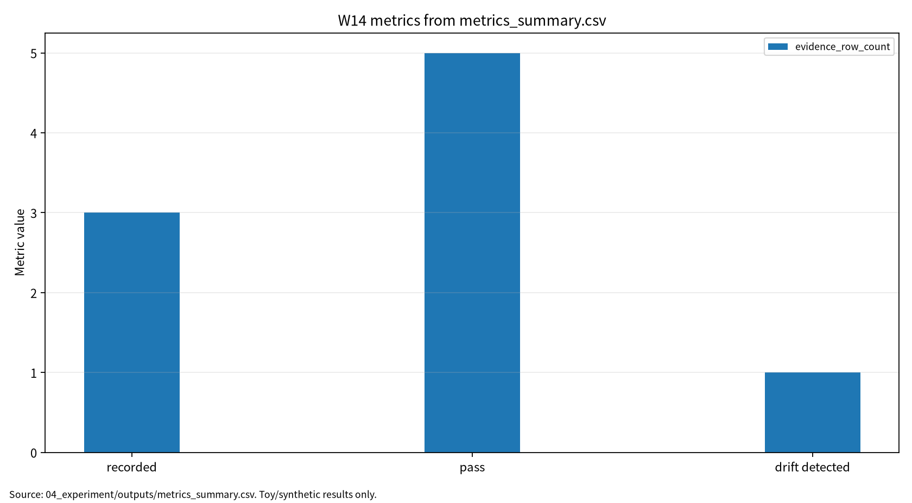

| 항목 | 내용 |
|---|---|
| 주차 | W14 |
| 작성자 | 박영세 |
| 학번 | 26200122 |
| 보고서 제목 | MLOps/DevOps·데이터/모델 파이프라인·공급망 보안 |
| 작성일 | 2026-06-23 |
| 보완일 | 2026-06-23 |
| 실험 실행일 | 2026-06-22 |
| 문서 상태 | 제출용 보고서 |
| 최종 보고서 | 06_report/final/integrated_report_final.md |
| 실험 근거 | 04_experiment/outputs/run_log.md, metrics_summary.csv, results.json |
| 발표자료 | 09_presentation/ |
| ## 1. 한 문장 요약 |
운영형 AI 시스템 보안은 모델 accuracy만이 아니라 dataset hash, config hash, model hash, drift score, audit coverage, artifact inventory, re-run consistency가 함께 남는 evidence set 문제다[1][2].
초록: 본 보고서는 MLOps/DevOps, data/model pipeline, monitoring, drift detection을 AI 원리로 정리하고, ML supply chain, artifact tampering, logging/update attack surface를 보안 이슈로 분석한다. Synthetic MLOps toy pipeline 기반 안전 실험에서는 실제 개인정보와 운영 서비스를 사용하지 않고 toy logistic regression을 실행하여 baseline accuracy 0.925000, F1 0.923077, drift score 0.307626, audit coverage 1.000000, inventory coverage 1.000000을 기록했다. 이 수치는 실제 기업 공급망 보안 보증이 아니라 evidence set 보고 형식 검증용 결과다.
키워드: MLOps, ML Supply Chain, Artifact Integrity, Drift Monitoring, Auditability, AI BOM
W14는 W01~W13의 모델 단위 AI 보안 평가를 운영형 AI 시스템과 공급망 보안으로 확장한다. 모델이 실제 서비스가 되려면 데이터 수집, feature engineering, 학습 코드, config, model registry, deployment, monitoring, rollback, audit log 전 과정이 연결된다. 이번 주 목표는 MLOps lifecycle, ML supply chain attack surface, drift monitoring, AI BOM/ML artifact inventory, audit evidence set을 함께 설명하는 것이다.
MLOps는 ML, software engineering, data engineering, operations를 연결하는 생명주기 관리 방식이다[1]. Production ML deployment 연구는 연구용 모델과 실제 운영 workflow 사이의 격차를 보여준다[2]. AIOps 연구는 telemetry 기반 anomaly detection, incident response, root-cause analysis가 운영형 AI 관리에 필요함을 보여준다[3]. Edge AI deployment는 latency, bandwidth, device resource, distributed update 문제를 추가한다[4]. Deep learning for software engineering 연구는 AI가 개발 pipeline 내부로 들어오면서 software supply chain과 ML supply chain이 결합됨을 보여준다[5].
표 1. W14 핵심 개념과 보안 연결
| 개념 | 요점 | 보안 연결 |
|---|---|---|
| MLOps lifecycle | 데이터 준비, 학습, 검증, 배포, 모니터링, 재학습 | 단계별 보호 자산 |
| Data/model pipeline | 데이터와 모델 산출물의 출처·버전·config 추적 | provenance, reproducibility |
| Monitoring/drift | 운영 입력 분포 변화 감시 | drift 미탐지, human review |
| AIOps | 로그와 metric 기반 incident detection/RCA | auditability |
| Edge deployment | 분산 배포와 update 관리 | artifact tampering |
W14의 보안 이슈는 실제 공격 절차 재현이 아니라 운영 파이프라인의 보호 자산과 통제항목 정의다. 핵심 위협은 data pipeline poisoning, model artifact tampering, dependency risk, unsafe update, log leakage, drift 미탐지, audit trail 부재다.
그림 1. MLOps 공급망 보안 evidence flow
Dataset / Feature Pipeline -> Training Code + Config + Seed
-> Model Artifact -> Registry / Deployment
-> Monitoring / Drift Detection -> Audit Log / Artifact Inventory
-> Evidence Set
표 2. 관련 문헌 5편 요약
| ID | 논문 | 핵심 역할 | 검증 상태 |
|---|---|---|---|
| P01 | Eken et al., A Multivocal Review of MLOps Practices, Challenges and Open Issues |
MLOps lifecycle, practice, governance | 수업자료 제목/저자명 차이 확인 필요 |
| P02 | Paleyes et al., Challenges in Deploying Machine Learning |
production deployment challenge | DOI 확인, Article 번호 확인 필요 |
| P03 | Diaz-de-Arcaya et al., MLOps/AIOps systematic survey | monitoring, incident response | DOI 제목과 수업자료 제목 차이, 로컬 PDF 대체 |
| P04 | Chen and Ran, Deep Learning With Edge Computing |
edge deployment 제약 | DOI/권호/페이지 확인, 로컬 PDF 대체 |
| P05 | Yang, Xia, Lo, Grundy, A Survey on Deep Learning for Software Engineering |
AI-assisted SE와 pipeline 보안 | 수업자료 Xiang Chen 표기 확인 필요 |
P03/P04/P05는 로컬 PDF가 대체문헌이므로 지정 논문처럼 인용하지 않는다.
| 논문 | 차별성 | 내 논문 활용 |
|---|---|---|
| P01 | MLOps practice와 governance 구조 | MLOps 보안통제 상위 구조 |
| P02 | 운영 배포 workflow의 현실적 난점 | 연구용/운영용 ML 격차 |
| P03 | AIOps telemetry와 incident response | monitoring, auditability |
| P04 | edge deployment와 분산 update | edge 공급망 통제 |
| P05 | AI-assisted SE가 software/ML pipeline을 결합 | 개발 자동화 도구 감사 |
표 3. W14 Research Track 요약
| 항목 | 내용 |
|---|---|
| 연구문제 | MLOps 파이프라인에서 보안 위협을 어떻게 분류하고 어떤 evidence로 재현성과 책임성을 보장할 것인가 |
| 대상 시스템 | MLOps 기반 ML 서비스 파이프라인 |
| 보호 자산 | dataset, feature pipeline, training code, config, seed, model artifact, registry, deployment setting, logs, monitoring telemetry |
| 방어/점검 | dataset hash, config hash, model hash, artifact inventory, audit log, drift monitoring, human approval, rollback plan |
| 제외 범위 | 실제 운영 서비스 침해, 개인정보 사용, 악성 패키지 배포, 무단 시스템 접근 |
표 4. W14 실습 설계
| Item | Description |
|---|---|
| Dataset | Synthetic MLOps binary classification |
| Train/Test samples | 320 / 160 |
| Feature count | 5 |
| Model | Toy logistic regression |
| Drift shift / threshold | 0.60 / 0.25 |
| Seed | 42 |
| Output files | metrics_summary.csv, results.json, run_log.md, model_artifact.json, artifact_inventory.json, audit_log.jsonl |
표 5. W14 실습 결과
| 점검 항목 | 측정 지표 | 결과 | 보안 의미 |
|---|---|---|---|
| Baseline model | Accuracy | 0.925000 | 정상 조건 기준 성능 |
| Baseline model | F1 | 0.923077 | 정상 조건 분류 균형 |
| Data versioning | Dataset hash | sha256:b9e597bccdbde442 |
데이터 무결성 기준점 |
| Model artifact verification | Model hash match | true | 모델 아티팩트 변조 탐지 기준 |
| Re-run consistency | Model/data hash match | true | 동일 config/seed 재실행 가능성 |
| Drift monitoring | Mean standardized feature shift | 0.307626 | 입력 분포 변화 감시 |
| Drifted model | Accuracy under drift | 0.925000 | 분포 변화 조건 성능 |
| Log audit | Audit coverage | 1.000000 | toy 필수 로그 필드 보존률 |
| Artifact inventory | Inventory coverage | 1.000000 | toy AI BOM/ML artifact inventory 최소 항목 충족률 |
본 실험의 drift score는 synthetic 기준 데이터와 drifted 데이터의 평균 표준화 feature shift이다. 이 값은 실제 운영 장애나 공격 성공률을 의미하지 않는다. 다만 threshold 0.25를 초과했으므로 toy pipeline에서는 human review, rollback 검토, 추가 데이터 검증, model performance 재평가가 필요한 감시 신호로 해석한다.
표 6. MLOps Evidence Set 해석
| Evidence 항목 | 의미 | 보안 연결 | 한계 |
|---|---|---|---|
| Dataset hash | 데이터 버전의 무결성 기준점 | 데이터 오염·변조 탐지 | 데이터 품질 자체를 보장하지 않음 |
| Config hash | 설정의 재현성 기준점 | 설정 변조 탐지 | 외부 의존성 버전까지 포함 필요 |
| Model hash | 모델 artifact 변경 탐지 | 모델 변조 탐지 | 모델 행동 의미를 설명하지 않음 |
| Drift score | 운영 입력 분포 변화 감시 | drift 미탐지 방지 | 원인 분석은 별도 필요 |
| Audit coverage | 필수 로그 필드 보존률 | 책임추적성 | 로그 품질·진실성을 보장하지 않음 |
| Inventory coverage | AI BOM/ML artifact inventory 최소 항목 충족률 | 공급망 가시성 | SBOM, license, vulnerability scan 확장 필요 |
표 7. AI BOM / ML Artifact Inventory 확장 항목
| 범주 | 필수 항목 | W14 toy 실험 반영 | 운영 확장 필요 |
|---|---|---|---|
| Dataset | name, version, hash, source, license, personal data flag | 일부 반영 | data card, lineage, consent, retention |
| Feature pipeline | feature code version, transformation hash | 미반영 | feature store lineage |
| Training code | git commit, source hash, environment | 일부 반영 필요 | signed build, branch protection |
| Config | config hash, hyperparameters, seed | 반영 | config approval workflow |
| Model artifact | model hash, model type, metric, registry path | 반영 | model card, signature, registry ACL |
| Dependency | package list, container image digest | 미반영 | SBOM, vulnerability scan |
| Deployment | deployment version, endpoint, rollout policy | 미반영 | canary, rollback, approval gate |
| Monitoring | drift score, threshold, telemetry schema | 일부 반영 | alerting, incident response |
| Audit | run log, audit log, approval record | 일부 반영 | immutable log, access log |
이 결과는 synthetic MLOps toy pipeline 기반 평가 형식 검증용 수치이며, 실제 model registry, CI/CD, Kubernetes, package vulnerability scanner, production telemetry, 실제 기업 공급망 보안 수준으로 일반화하지 않는다.
그림 7. W14 metrics summary chart

출처: 04_experiment/outputs/metrics_summary.csv. 이 그래프는 공개 toy/synthetic 산출물 기반이며 실제 공격 성능이나 운영 환경 성능으로 일반화하지 않는다.
AI 도구는 문헌 요약, 코드 점검, 문장 구조화, 그래프 생성 보조에 사용하였다. 모든 DOI/URL, 실험 수치, 본문 인용, 결론은 작성자가 outputs 파일과 로컬 참고문헌 검증표를 대조하여 검증한다.
표. W14 AI 도구 활용 및 검증 기록
| 항목 | 내용 |
|---|---|
| 사용 도구명 | Codex, ChatGPT 계열 도구 |
| 사용 일자 | 2026-06-23 |
| 사용 목적 | 문헌 요약 정리, 보고서 구조화, 안전한 toy/synthetic 실험 결과 표기 점검, 그래프 생성 보조, 제출 전 체크리스트 정리 |
| 주요 프롬프트 요약 | 주차별 제출 보고서 보완, 참고문헌 검증표 정리, metrics_summary.csv 기반 그래프 생성, AI 활용 고지 작성 |
| AI 산출물 반영 위치 | 07_week_submission/w14_submission_report.md, 07_week_submission/assets/w14_metric_chart.png, 05_ai_worklog/ai_disclosure_draft.md |
| 본인 수정 내용 | 주차별 문헌 상태 확인, 실험 수치와 outputs 대조, 안전 범위와 한계 문장 확인, 최종 제출 전 미확정 문헌 분리 |
| 사실관계 검증 방법 | 01_papers/paper_list.md, 01_papers/doi_check.md, 05_references/doi_index.md, 강의계획서 문헌표 대조 |
| 참고문헌 검증 방법 | 제목, 저자, 연도, 학술지/학회, DOI/URL, 본문 인용번호와 참고문헌 목록 대응 확인 |
| 실험결과 검증 방법 | 04_experiment/outputs/metrics_summary.csv, results.json, run_log.md의 수치와 보고서 표기 대조 |
| 최종 책임 확인 | AI 산출물은 초안 보조이며 최종 제출자는 원고 내용, 인용, 실험결과, 연구윤리 책임을 확인한다. |
W14는 기말논문에서 운영형 AI 시스템의 보안·재현성 보증을 위한 evidence set으로 활용할 수 있다. Dataset hash, model hash, config hash, drift score, audit coverage, artifact inventory를 최소 지표로 제안한다.
표 8. KCI 논문 제목 후보
| 번호 | 국문 제목 후보 | 영문 제목 후보 | 대상 시스템 | 보안 위협 | 연구방법 | 예상 기여 |
|---|---|---|---|---|---|---|
| 1 | 운영형 AI 시스템 보안을 위한 MLOps Evidence Set 평가 프레임워크 연구 | An Evaluation Framework of MLOps Evidence Sets for Operational AI System Security | MLOps 기반 AI 서비스 | artifact tampering, drift, audit gap | 문헌분석 + synthetic pipeline 실험 | evidence set 평가표 |
| 2 | AI 공급망 보안에서 Dataset·Config·Model Hash와 Audit Log의 역할 분석 | An Analysis of Dataset, Config, Model Hashes and Audit Logs in AI Supply Chain Security | ML pipeline | data poisoning, model tampering | toy pipeline + 체크리스트 | hash/audit 기반 통제 |
| 3 | AI BOM 기반 MLOps 공급망 보안과 재현성 평가체계 연구 | A Study on AI BOM-Based MLOps Supply Chain Security and Reproducibility Evaluation | AI BOM/ML artifact inventory | dependency risk, model update risk | 문헌분석 + inventory 설계 | AI BOM 최소 항목 제안 |
추천 제목은 운영형 AI 시스템 보안을 위한 MLOps Evidence Set 평가 프레임워크 연구다. 연구문제는 evidence set 최소 구성, dataset/config/model hash의 역할, drift score와 audit coverage의 운영 감시 의미, AI BOM/ML artifact inventory 확장 항목으로 잡는다.
SCI 제목 후보는 An Evidence-Set Framework for MLOps Supply-Chain Security and Reproducibility in Operational AI Systems다. Structured abstract는 operational AI systems의 data pipelines, training code, configurations, model artifacts, registries, deployment settings, monitoring telemetry, audit logs를 배경으로 두고, model accuracy 중심 평가가 artifact integrity, configuration traceability, drift monitoring, audit completeness, AI BOM coverage를 과소보고한다는 문제를 제기한다. 방법은 문헌 5편 종합과 safe synthetic toy pipeline이며, 결과는 evidence-set reporting 예시로만 해석한다.
표 9. SCI Related Work 축
| 연구축 | 대표 논문 | 역할 |
|---|---|---|
| MLOps practices | Eken et al. | MLOps lifecycle, practice, challenge, governance |
| ML deployment challenges | Paleyes et al. | production deployment workflow and case-study challenges |
| MLOps/AIOps taxonomy | Diaz-de-Arcaya et al. | monitoring, incident response, AIOps taxonomy |
| Edge deployment | Chen and Ran | cloud-edge-device constraints and distributed updates |
| Deep learning for software engineering | Yang, Xia, Lo, Grundy | AI-assisted SE and DevOps/MLOps pipeline impact |
발표 핵심 메시지는 "운영형 AI 시스템 보안은 accuracy가 아니라 evidence set을 요구한다"이다. 발표자료는 09_presentation/에 있으며, P03/P04/P05의 대체 문헌 원문 상태와 drift score 해석 한계를 발표 중 명시한다.
| 번호 | 참고문헌 | DOI/URL | 상태 | 남은 검토 사항 |
|---|---|---|---|---|
| [1] | Beyza Eken et al., A Multivocal Review of MLOps Practices, Challenges and Open Issues |
https://doi.org/10.1145/3747346 | 부분 확인 | 수업자료 제목/저자명 차이, Article 번호 확인 필요 |
| [2] | Paleyes et al., Challenges in Deploying Machine Learning: A Survey of Case Studies |
https://doi.org/10.1145/3533378 | 확인 | Article 번호 확인 필요 |
| [3] | Diaz-de-Arcaya et al., MLOps/AIOps systematic survey | https://doi.org/10.1145/3625289 | 부분 확인 | 수업자료 제목과 DOI 제목 차이, 로컬 PDF 대체 |
| [4] | Chen and Ran, Deep Learning With Edge Computing: A Review |
https://doi.org/10.1109/JPROC.2019.2921977 | 확인 | 로컬 PDF 대체, 원문 확보 필요 |
| [5] | Yang, Xia, Lo, Grundy, A Survey on Deep Learning for Software Engineering |
https://doi.org/10.1145/3505243 | 부분 확인 | 수업자료 Xiang Chen 표기 확인 필요 |
PDF 보관 정책 점검 결과, 01_papers/pdf/의 논문 PDF 원문은 로컬 파일로 보존하되 Git 추적은 해제했다. public GitHub 저장소에는 출판사 PDF 원문 대신 DOI/URL, 서지정보, 요약만 남기는 정책을 적용한다.
| 점검 항목 | 상태 | 비고 |
|---|---|---|
| 1장 한 문장 요약 작성 | 완료 | |
| 2장 학습 배경과 주차 목표 작성 | 완료 | |
| AI 원리 70% 정리 | 완료 | |
| 보안 이슈 30% 정리 | 완료 | |
| 논문 5편 요약 | 완료 / 확인 필요 | P01/P03/P05 서지 차이 |
| 논문 5편 비교표 보완 | 완료 / 확인 필요 | 대체 문헌 원문 상태 반영 |
| Research Track 5요소 작성 | 완료 | |
| P01 공식 제목/저자명 검증 | 완료 / 확인 필요 | 수업자료 표기 차이 |
| P02 DOI/URL 검증 | 완료 | Article 번호 재확인 |
| P03 지정 논문 원문 확보 | 확인 필요 | 현재 대체 문헌 원문 |
| P04 지정 논문 원문 확보 | 확인 필요 | 현재 대체 문헌 원문 |
| P05 지정 논문 원문/저자 표기 | 확인 필요 | Xiang Chen 표기 |
| 실험 outputs 파일 존재 확인 | 완료 | 6개 output 파일 |
| 실험 결과와 보고서 수치 일치 | 완료 | outputs 기준 |
| drift score 해석 보완 | 완료 | 공격 성공률 아님 |
| AI BOM 확장표 추가 | 완료 | 운영 확장 항목 포함 |
| KCI 논문 형식 전환 작성 | 완료 | |
| SCI 논문 형식 전환 작성 | 완료 | |
| 본문 인용과 참고문헌 대응 | 완료 / 확인 필요 | [1]-[5] 대응 |
| 표·그림 번호 정리 | 완료 | 표 1-9, 그림 1 |
| AI 활용 고지 작성 | 완료 | |
| PDF 저작권 위험 점검 | 완료 / 조치 필요 | PDF 원문 Git 추적 해제 완료(로컬 파일 보존) |
| 최종 사람이 검토할 항목 표시 | 완료 | 제출 확정 전 재검토 필요 |